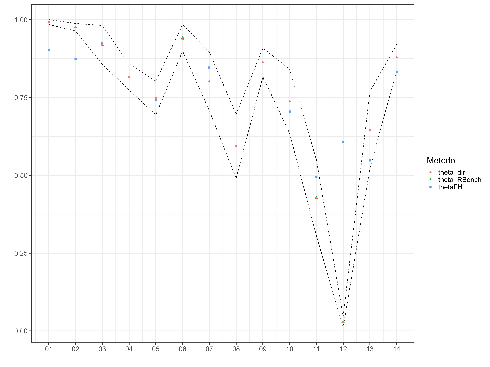

3.4 Preparing Inputs for STAN
- Splitting the database into observed and unobserved domains
Observed domains.
Unobserved domains.
- Defining the fixed-effects matrix.
## Observed domains
Xdat <- cbind(inter = 1,data_dir[,names_cov])
## Unobserved domains
Xs <- cbind(inter = 1,data_syn[,names_cov])- Creating a parameter list for
STAN.
sample_data <- list(
N1 = nrow(Xdat), # Observed.
N2 = nrow(Xs), # Unobserved.
p = ncol(Xdat), # Number of regressors.
X = as.matrix(Xdat), # Observed Covariates.
Xs = as.matrix(Xs), # Unobserved Covariates
y = as.numeric(data_dir$T_pobreza),
sigma_e = sqrt(data_dir$varhat)
)- Compiling the model in
STAN.
library(rstan)
fit_FH_arcoseno <- "Recursos/04_FH_Arcosin/modelosStan/15FH_arcsin_normal.stan"
options(mc.cores = parallel::detectCores())
rstan::rstan_options(auto_write = TRUE) # speed up running time
model_FH_arcoseno <- stan(
file = fit_FH_arcoseno,
data = sample_data,
verbose = FALSE,
warmup = 2500,
iter = 3000,
cores = 4
)
saveRDS(model_FH_arcoseno,
"Recursos/04_FH_Arcosin/02_model_FH_arcoseno.rds")3.4.0.1 Resultados del modelo para los dominios observados.
library(bayesplot)
library(patchwork)
library(posterior)
y_pred_B <- as.array(model_FH_arcoseno, pars = "theta") %>%
as_draws_matrix()
rowsrandom <- sample(nrow(y_pred_B), 100)
y_pred2 <- y_pred_B[rowsrandom, ]
ppc_dens_overlay(y = as.numeric(data_dir$pobreza), y_pred2)
Graphical analysis of the convergence of \(\sigma^2_u\) chains.
posterior_sigma2_u <- as.array(model_FH_arcoseno, pars = "sigma2_u")
(mcmc_dens_chains(posterior_sigma2_u) +
mcmc_areas(posterior_sigma2_u) ) /
mcmc_trace(posterior_sigma2_u)
Para validar la convergencia de todas las cadenas se hace uso del R-hat.
parametros <- summary(model_FH_arcoseno, pars = c("theta", "theta_pred") )$summary %>%
data.frame()
p1 <- mcmc_rhat(parametros$Rhat)
p1
Estimation of the FH of poverty in the observed domains.
theta_FH <- summary(model_FH_arcoseno,pars = "theta")$summary %>%
data.frame()
data_dir %<>% mutate(pred_arcoseno = theta_FH$mean,
pred_arcoseno_EE = theta_FH$sd,
Cv_pred = pred_arcoseno_EE/pred_arcoseno)Estimation of the FH of poverty in the NOT observed domains.
theta_FH_pred <- summary(model_FH_arcoseno,pars = "theta_pred")$summary %>%
data.frame()
data_syn <- data_syn %>%
mutate(pred_arcoseno = theta_FH_pred$mean,
pred_arcoseno_EE = theta_FH_pred$sd,
Cv_pred = pred_arcoseno_EE/pred_arcoseno)| dam2 | pobreza | pred_arcoseno | pred_arcoseno_EE | Cv_pred |
|---|---|---|---|---|
| 0101 | NA | 0.8630 | 0.1463 | 0.1696 |
| 0201 | NA | 0.8797 | 0.1426 | 0.1621 |
| 0204 | NA | 0.8412 | 0.1592 | 0.1893 |
| 0206 | NA | 0.8980 | 0.1296 | 0.1443 |
| 0207 | NA | 0.8958 | 0.1321 | 0.1475 |
| 0208 | NA | 0.7818 | 0.1893 | 0.2421 |
| 0209 | NA | 0.8910 | 0.1313 | 0.1474 |
| 0210 | NA | 0.8990 | 0.1290 | 0.1435 |
| 0211 | NA | 0.8872 | 0.1389 | 0.1566 |
| 0502 | NA | 0.7649 | 0.1889 | 0.2470 |
consolidating the bases of estimates for observed and UNobserved domains.
3.4.1 Benchmark Process
- From the census extract the total number of people by DAM2
total_pp <- readRDS(file = "Recursos/04_FH_Arcosin/06_censo_mrp.rds") %>%
mutate(dam = substr(dam2,1,2))
N_dam_pp <- total_pp %>% group_by(dam,dam2) %>%
summarise(total_pp = sum(n) ) %>%
group_by(dam) %>% mutate(dam_pp = sum(total_pp))
tba(N_dam_pp %>% data.frame() %>% slice(1:10))| dam | dam2 | total_pp | dam_pp |
|---|---|---|---|
| 01 | 0101 | 35750 | 88799 |
| 01 | 0102 | 26458 | 88799 |
| 01 | 0103 | 26591 | 88799 |
| 02 | 0201 | 58937 | 573065 |
| 02 | 0202 | 43700 | 573065 |
| 02 | 0203 | 35309 | 573065 |
| 02 | 0204 | 47230 | 573065 |
| 02 | 0205 | 35694 | 573065 |
| 02 | 0206 | 38832 | 573065 |
| 02 | 0207 | 42103 | 573065 |
- Obtaining direct estimates by DAM or the level of aggregation at which the survey is representative.
In this code, an RDS file of a survey (07_data_JAM.rds) is read, and the transmute() function is used to select and transform the variables of interest.
The code is conducting survey data analysis using the survey package in R. Initially, an object design is created as a survey design using the as_survey_design() function from the srvyr package. This design includes primary sampling unit identifiers (upm), weights (fep), strata (estrato), and survey data (encuesta). Subsequently, the design object is grouped by the variable “Aggregate,” and the mean of the variable “pobreza” with a confidence interval for the entire population is calculated using the survey_mean() function. The result is stored in the directoDam object and displayed in a table.
library(survey)
library(srvyr)
options(survey.lonely.psu = "adjust")
diseno <-
as_survey_design(
ids = upm,
weights = fep,
strata = estrato,
nest = TRUE,
.data = encuesta
)
directoDam <- diseno %>%
group_by(dam) %>%
summarise(
theta_dir = survey_mean(pobreza, vartype = c("ci"))
)
tba(directoDam %>% slice(1:10))| dam | theta_dir | theta_dir_low | theta_dir_upp |
|---|---|---|---|
| 01 | 0.9926 | 0.9848 | 1.0004 |
| 02 | 0.9760 | 0.9638 | 0.9881 |
| 03 | 0.9191 | 0.8566 | 0.9816 |
| 04 | 0.8160 | 0.7742 | 0.8578 |
| 05 | 0.7486 | 0.6943 | 0.8029 |
| 06 | 0.9419 | 0.8993 | 0.9844 |
| 07 | 0.8019 | 0.7076 | 0.8962 |
| 08 | 0.5933 | 0.4904 | 0.6961 |
| 09 | 0.8628 | 0.8167 | 0.9090 |
| 10 | 0.7379 | 0.6348 | 0.8410 |
- Carry out the consolidation of information obtained in 1 and 2.
temp <- estimacionesPre %>%
inner_join(N_dam_pp ) %>%
inner_join(directoDam )
tba(temp %>% slice(1:10))| dam2 | theta_pred | dam | total_pp | dam_pp | theta_dir | theta_dir_low | theta_dir_upp |
|---|---|---|---|---|---|---|---|
| 0102 | 0.9832 | 01 | 26458 | 88799 | 0.9926 | 0.9848 | 1.0004 |
| 0103 | 0.8759 | 01 | 26591 | 88799 | 0.9926 | 0.9848 | 1.0004 |
| 0202 | 0.9391 | 02 | 43700 | 573065 | 0.9760 | 0.9638 | 0.9881 |
| 0203 | 0.8117 | 02 | 35309 | 573065 | 0.9760 | 0.9638 | 0.9881 |
| 0205 | 0.9645 | 02 | 35694 | 573065 | 0.9760 | 0.9638 | 0.9881 |
| 0212 | 0.8303 | 02 | 58509 | 573065 | 0.9760 | 0.9638 | 0.9881 |
| 0301 | 0.9419 | 03 | 41762 | 93896 | 0.9191 | 0.8566 | 0.9816 |
| 0302 | 0.9109 | 03 | 52134 | 93896 | 0.9191 | 0.8566 | 0.9816 |
| 0401 | 0.8079 | 04 | 49909 | 81732 | 0.8160 | 0.7742 | 0.8578 |
| 0402 | 0.8307 | 04 | 31823 | 81732 | 0.8160 | 0.7742 | 0.8578 |
- With the organized information, calculate the weights for the Benchmark
R_dam2 <- temp %>% group_by(dam) %>%
summarise(
R_dam_RB = unique(theta_dir) / sum((total_pp / dam_pp) * theta_pred)
) %>%
left_join(directoDam, by = "dam")
tba(R_dam2 %>% arrange(desc(R_dam_RB)))| dam | R_dam_RB | theta_dir | theta_dir_low | theta_dir_upp |
|---|---|---|---|---|
| 13 | 1.1793 | 0.6461 | 0.5226 | 0.7696 |
| 02 | 1.1158 | 0.9760 | 0.9638 | 0.9881 |
| 01 | 1.0996 | 0.9926 | 0.9848 | 1.0004 |
| 09 | 1.0669 | 0.8628 | 0.8167 | 0.9090 |
| 14 | 1.0550 | 0.8792 | 0.8376 | 0.9207 |
| 10 | 1.0465 | 0.7379 | 0.6348 | 0.8410 |
| 05 | 1.0098 | 0.7486 | 0.6943 | 0.8029 |
| 06 | 1.0031 | 0.9419 | 0.8993 | 0.9844 |
| 04 | 0.9991 | 0.8160 | 0.7742 | 0.8578 |
| 08 | 0.9973 | 0.5933 | 0.4904 | 0.6961 |
| 03 | 0.9940 | 0.9191 | 0.8566 | 0.9816 |
| 07 | 0.9474 | 0.8019 | 0.7076 | 0.8962 |
| 11 | 0.8631 | 0.4277 | 0.3056 | 0.5498 |
| 12 | 0.0480 | 0.0292 | 0.0120 | 0.0463 |
calculating the weights for each domain.
| dam2 | W_i |
|---|---|
| 0102 | 0.2980 |
| 0103 | 0.2995 |
| 0202 | 0.0763 |
| 0203 | 0.0616 |
| 0205 | 0.0623 |
| 0212 | 0.1021 |
| 0301 | 0.4448 |
| 0302 | 0.5552 |
| 0401 | 0.6106 |
| 0402 | 0.3894 |
- Perform FH Benchmark Estimation
estimacionesBench <- estimacionesPre %>%
left_join(R_dam2, by = c("dam")) %>%
mutate(theta_pred_RBench = R_dam_RB * theta_pred) %>%
left_join(pesos) %>%
select(dam, dam2, W_i, theta_pred, theta_pred_RBench)
tba(estimacionesBench %>% slice(1:10))| dam | dam2 | W_i | theta_pred | theta_pred_RBench |
|---|---|---|---|---|
| 01 | 0102 | 0.2980 | 0.9832 | 1.0811 |
| 01 | 0103 | 0.2995 | 0.8759 | 0.9632 |
| 02 | 0202 | 0.0763 | 0.9391 | 1.0478 |
| 02 | 0203 | 0.0616 | 0.8117 | 0.9057 |
| 02 | 0205 | 0.0623 | 0.9645 | 1.0762 |
| 02 | 0212 | 0.1021 | 0.8303 | 0.9264 |
| 03 | 0301 | 0.4448 | 0.9419 | 0.9363 |
| 03 | 0302 | 0.5552 | 0.9109 | 0.9054 |
| 04 | 0401 | 0.6106 | 0.8079 | 0.8072 |
| 04 | 0402 | 0.3894 | 0.8307 | 0.8299 |
- Validation: FH Estimation with Benchmark
estimacionesBench %>% group_by(dam) %>%
summarise(theta_reg_RB = sum(W_i * theta_pred_RBench)) %>%
left_join(directoDam, by = "dam") %>%
tba()| dam | theta_reg_RB | theta_dir | theta_dir_low | theta_dir_upp |
|---|---|---|---|---|
| 01 | 0.9926 | 0.9926 | 0.9848 | 1.0004 |
| 02 | 0.9760 | 0.9760 | 0.9638 | 0.9881 |
| 03 | 0.9191 | 0.9191 | 0.8566 | 0.9816 |
| 04 | 0.8160 | 0.8160 | 0.7742 | 0.8578 |
| 05 | 0.7486 | 0.7486 | 0.6943 | 0.8029 |
| 06 | 0.9419 | 0.9419 | 0.8993 | 0.9844 |
| 07 | 0.8019 | 0.8019 | 0.7076 | 0.8962 |
| 08 | 0.5933 | 0.5933 | 0.4904 | 0.6961 |
| 09 | 0.8628 | 0.8628 | 0.8167 | 0.9090 |
| 10 | 0.7379 | 0.7379 | 0.6348 | 0.8410 |
| 11 | 0.4277 | 0.4277 | 0.3056 | 0.5498 |
| 12 | 0.0292 | 0.0292 | 0.0120 | 0.0463 |
| 13 | 0.6461 | 0.6461 | 0.5226 | 0.7696 |
| 14 | 0.8792 | 0.8792 | 0.8376 | 0.9207 |
3.4.2 Results Validation
This code conducts data analysis and visualization using the ggplot2 library. Specifically, it merges two data frames using the left_join() function, groups the data by the dam variable, and performs some operations to transform the thetaFH and theta_pred_RBench variables. Afterwards, it utilizes the gather() function to organize the data in a long format and visualizes it with ggplot().
The resulting visualization displays points in different shapes and colors, representing various estimation methods. Additionally, it includes two dashed lines that depict the upper and lower confidence intervals for the observed values in the theta_dir variable.
temp <- estimacionesBench %>% left_join(
bind_rows(
data_dir %>% select(dam2, thetaFH = pred_arcoseno),
data_syn %>% select(dam2, thetaFH = pred_arcoseno))) %>%
group_by(dam) %>%
summarise(thetaFH = sum(W_i * theta_pred),
theta_RBench = sum(W_i * theta_pred_RBench)
) %>%
left_join(directoDam, by = "dam") %>%
mutate(id = 1:n())
temp %<>% gather(key = "Metodo",value = "Estimacion",
-id, -dam, -theta_dir_upp, -theta_dir_low)
p1 <- ggplot(data = temp, aes(x = id, y = Estimacion, shape = Metodo)) +
geom_point(aes(color = Metodo), size = 2) +
geom_line(aes(y = theta_dir_low), linetype = 2) +
geom_line(aes(y = theta_dir_upp), linetype = 2) +
theme_bw(20) +
scale_x_continuous(breaks = temp$id,
labels = temp$dam) +
labs(y = "", x = "")
# ggsave(plot = p1,
# filename = "Recursos/04_FH_Arcosin/08_validar_bench.png",width = 16,height = 12)
p1 
¡Entendido! Aquí tienes la traducción: